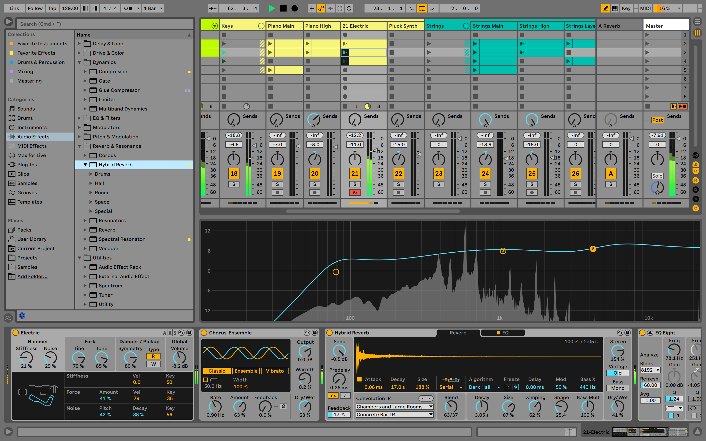
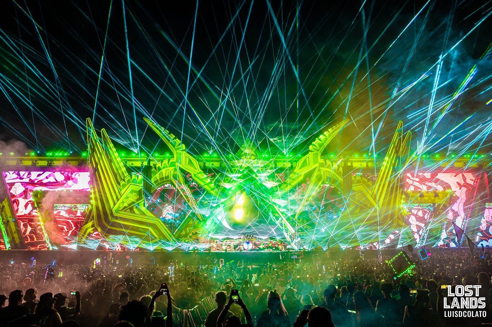

Music Production
My biggest passion in life is music. I've been a producer/dj for 8 years now. I got inspired to make music after I went to go see an artist named Shiverz Da Butcher play at an undeground venue in Chicago. At that moment I knew it was what I wanted to pursue. I make dubstep music and bass heavy edm. The program that I use to make my music is called Ableton. The cool thing about producing is that you can still learn new things every day. Besides producing I love to dj as well. Making my own songs and playing them out to crowds is a great feeling. I love to support my other aritst friends and play their music as well. The dubstep community is so welcoming and that is one of the main reasons I feel so apart of it at times. My biggest goal is to one day play Lost Lands Music Festival in Ohio.
 My Favorite Artists
- LVdubz
- Warlord
- Akirah
- Flix
- Motus